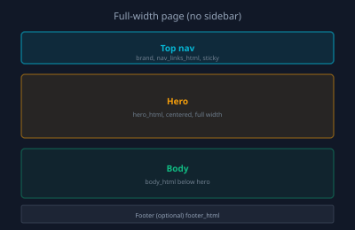

Govern delivery with evidence
Teams ship faster with agents when intent stays clear, execution stays reviewable, and outcomes stay traceable. Forge creates the governed spine from decision to release.

Trust model
Data boundary and execution boundary stay explicit. Human-owned approval points, audit evidence, and operator control keep automation reviewable. Unsupported claims stay out of scope.
Forge ecosystem
ForgeSDLC methodology, Lenses workspace visibility, LCDL governed tasks, Fleet controlled jobs, Platform architecture, and Blueprints practice knowledge work together.
Outcome
Clarity before automation
Uses design-system elevation tokens only—no ad-hoc deep shadows on elevated surfaces.